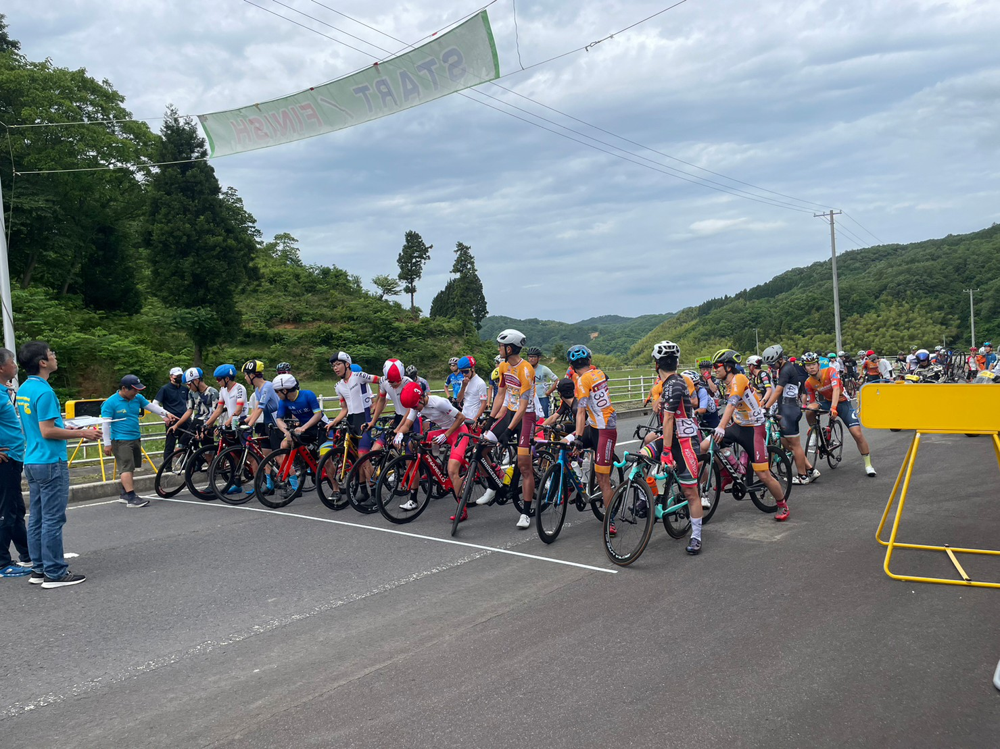

活動内容
毎週水曜日と土曜日に活動をおこなっています。
普段は松江周辺を30kmから40km程のライドをおこなっており、3週間に一度は80km程のロングライドをおこなっています。
トレーニング思考の日もあれば、カフェライドのように緩いライドをする日もあります。
またレースに出場する部員は別に夜練を行ったりしています。
３本ローラー、固定ローラーでトレーニングで室内トレーニングも行います。
このように雨の日でも部室にはトレーニングできる環境が整っています。
夏と春の長期休暇には合宿を行います。昨年の夏合宿では松江から金沢まで1週間かけて自転車で行きました。
行政と提携してレースの運営のサポートをさせていただいたり、益田市の紹介ビデオ作成のお手伝いをさせていただいています。
島根県は自然に恵まれており、サイクリングをするには最高の環境が整っています。
ホームに戻る
